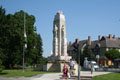

2006.06.15., csütörtök
tomcat
blog
droidzóna
levrov
Június 15-e, az év közepe, mellesleg ma volt Robin születésnapja is. (Meg egy régen volt barátnõmé, de annak már tizensok éve, szóra sem érdemes.) Ma volt a Mortimer-ügy elsõ érdemi tárgyalása is, amin sajnos nem tudtam ott lenni, mert Robin nekem szerdát mondott, mára pedig más programot intéztem. A lényeg egyébként annyi, hogy Mortimer valószínûleg rajtaveszt az "aki hülye, haljon meg" szólás fémjelezte õsi rendezõelven: megbízták a legolcsóbb ügyvédet, elhitték, hogy a politika nem fog beleszólni az ügybe, és most az egész család átszellemült arccal várja a felmentõ ítéletet, mert hát mi más születhetne. Az olcsó ügyvéd továbbra is dirigálja Mortimert, hogy mire mit mondjon, ennek eredményeképp már nincs egyetlen szava sem, amit ne cáfolna legalább két ellentétes vallomás, s a tanúmeghallgatásokon ugyanez az ügyvéd rendre rezzenéstelen arccal közli: nincs kérdésem. Szóval borítékolhatjuk, hogy Gy. Mihály emberölési kísérlet és súlyos testi sértés miatt hat-nyolc évet fog kapni, amit valószínûleg nem fog épségben átvészelni, hiszen a fegyintézetek lakói már most készülnek a fogadására. Gratulálunk. Az mondjuk fikarcnyit se érdekelne, ha valaki elbassza az életét a saját hülyeségével, de figyeljétek meg, a média lelkendezve fogja bejelenteni, hogy bebizonyosodott a rasszista támadás vádja, Józsika ártatlan pici babuci, és ez a szemét, náci sátánista meg akarta ölni, csakis azért, mert barnább a bõre a megengedettnél. Onnantól pedig nem lesz megállás: Józsikát többet fogják emlegetni, mint a holocaustot. És figyeljétek, mi lesz majd akkor, amikor pár év múlva a szúrás óta lép nélkül élõ Józsika felfordul.
Tárgyalás helyett Nagykanizsán jártam, Grass of CDi-nél, akivel együtt állítjuk össze a Freax Art Album-ot. A reggel a Kelenföldi pályaudvaron talált, persze egy szikra alvás nélkül, mert az alvászavarom továbbra is zavartalanul üzemel, és kisvártatva a Velencébe tartó nemzetközi expresszen üldögéltem. Nos, kérem, le a kalappal az olasz vagongyár ergonómusai elõtt! A magyar vonatokon - a csillivilli nemzetközi expresszeken is - olyan ortopéd ülések vannak, amelyekben nemhogy aludni, de ülni sem lehet tisztességesen. Volt már szerencsém negyvennyolc órás vonatutat ülve végigvirrasztani a zseniális tervezõk miatt. Az olaszok azonban vidám, barátságos népek, nem akarják szívatni embertársaikat, ezért a vagonokba kényelmes, süppedõs foteleket raktak, amelyek ráadásul egymásba csukhatók, így aztán aki akar, és nem ül vele szemben senki, akár ágyban fekve is eltöltheti az utazás unalmas óráit. Hát, én össze is csuktam. És végre sikerült aludnom. Ezúton köszönöm az olasz államvasutaknak!
Nagykanizsán Grass és négyéves kisfia, Frodó fogadtak vigyorogva, majd rövid séta során bemutatták a város nevezetességeinek egy részét.
Thury-Thúry György egyébként Kanizsa végvárának egyik parancsnoka volt 1568-tól. A Zrínyi védte Szigetvár eleste után Kanizsa vára vette át annak szerepét. Thury igen hõs katona, kiváló bajvívó és hadvezér hírében állott, Várpalotát és Veszprémet is õ foglalta vissza a töröktõl. Kinevezése után olasz hadmérnökök segítségével a kis kanizsai várat jókora erõdrendszerré fejlesztette.
A sokat ostromlott kanizsai várnak ma már nyoma sincs, egy XVIII. század végi haderõreformnak esett áldozatául. Amikor a császáriak felszámolták a végvárrendszert, a vár még álló részeit három szekérderékra való puskaporral rombolták le. Biztos nagyon látványos volt.
Kanizsa neve egyébként a kenéz szóból ered, és szláv nyelvi torzulás útján kapta mai formáját. Valami olyasmit jelent, hogy "a fejedelem területe, fejedelmi székhely".
Annak részleteivel, hogy hogyan ebédeltünk, illetve hogyan ültünk órákon át a számítógép elõtt, válogatva a könyvbe kerülõ sok száz grafikát, inkább nem untatlak benneteket. Helyette inkább nézzétek meg a Csonka-Magyarországon álló egyetlen Trianon-emlékmûvet. Igen, tényleg csak ez az egy van. 1934-ben emelték, s érdekessége, hogy már akkor is volt, aki tiltakozott ellene, olyannyira, hogy nem is volt felavató ünnepsége. A háború után a kommunisták lerombolták, darabjait elásták. A gengszterváltás után kiásták, rekonstruálták, és végre sikerült felavatni. Tekintsétek meg.

Ez lenne tehát Nagykanizsa minden turistanevezetessége. Grass késõbb bemutatta még az egykori sörgyár kéményeit, említette a villanykörte-gyárat, és valami orosz fúrógép-gyártó üzemrõl is beszélt, amelynek termékeit Szibéria-szerte használják mindenhol, ahol lyukra van szükség. Ezután kisétáltunk az állomásra, ahová nagy örömömre ismét az olasz vonat gördült be, és Pestig jót aludtam megint. Az idillt csak a szokásos magyar színvonalat hordozó kalauz rontotta el.
- Jó estét, jegyeket kérek - nyitott be a fülkébe. Odaadtam neki.
- Legyen szíves, kapcsolja már le a villanyt, ha már úgyis ott áll - mutattam a feje fölött a kapcsolóra.
- Há' még mit nem, kapcsolja le magának!
- Aha. Mindent az utasért, mi?
- Hát azért ez nem így megy ám!
- Hanem hogy megy?
- Feláll szépen, mint otthon, és lekapcsolja magának!
- Az a baj, ha felállok, nagyon szájon foglak vágni.
A szemüveges, kefebajszú kis balfasz hápogott egy kicsit, aztán a békesség kedvéért lekapcsolta a villanyt, és az ajtót be se csukva elviharzott.
- Ajtó! - szóltam utána.
Semmi eredmény. Nagyobb hang elõ.
- Gyere vissza azonnal, és csukd be a kibaszott ajtót, mert utánad megyek!!
Na, erre már visszasomfordált behúzott nyakkal, és becsukta az ajtót. Ezt is lehet majd emlegetni az Index fórumán, hogy már megint bunkó voltam valakivel. Igen, én. Az utazás további szakasza eseménytelenül zajlott, ugyanolyan jót aludtam Kelenföldig, mint onnan Kanizsáig.
| << elõzõ nap | következõ nap >> |